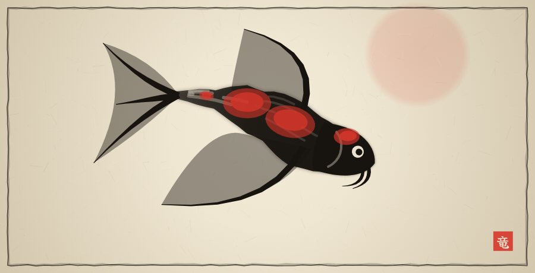
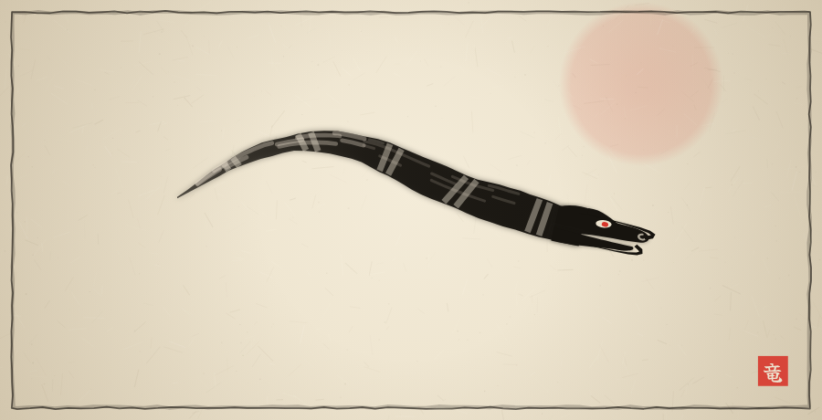
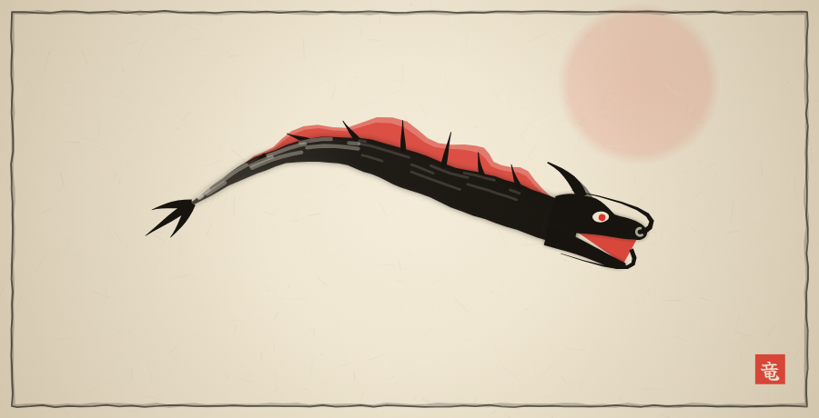
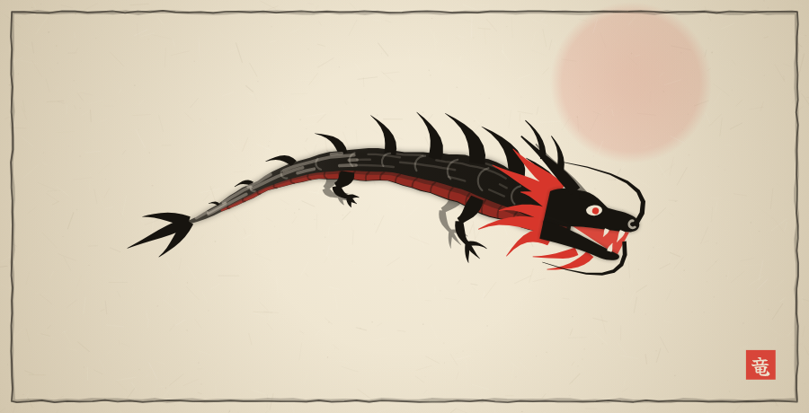
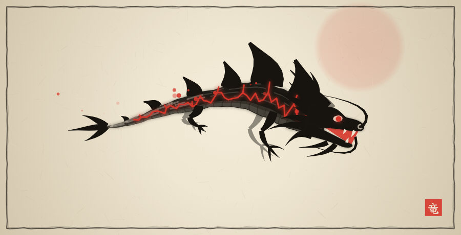
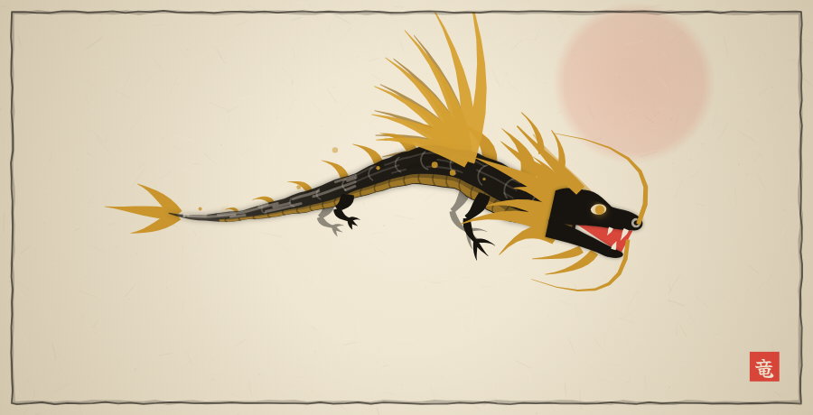

1 · KoiPunainen täplä otsassa, pyrstö ja evät
0 p
2 · PerhoskoiPitkät liehuvat evät, punaiset laikut, viikset
100 p
3 · VesikäärmePitkä ja ohut, raidallinen
200 p
4 · SarvikäärmeSarvet, punainen selkäpurje, aukeava kita
300 p
5 · Nuori lohikäärmeJalat, selkäpiikit, harja
400 p
6 · LohikäärmePunainen vatsa ja harja, suomut, hampaat
500 p
7 · MyrskylohikäärmeSalamapiikit, sähkö rungon ympärillä, jäänsiniset silmät
600 p
8 · Vuorten lohikäärmeKivilaatat selässä, hehkuvat halkeamat
700 p
9 · Taivaan lohikäärmeKultaiset siivet, vatsa ja harja
800 p
10 · RyūjinLiekehtivä selkä, kruunusarvet, tulihelmi
900 p